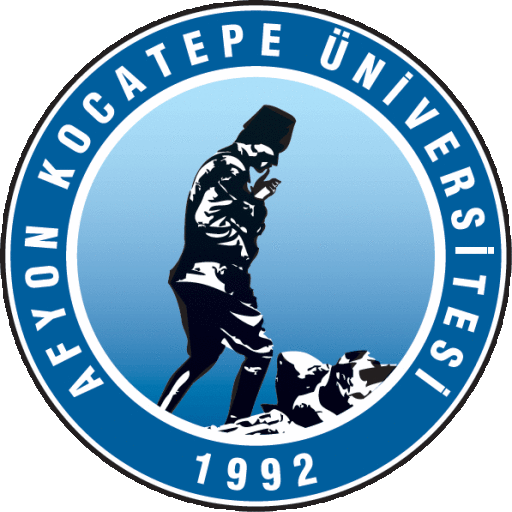

AFYON KOCATEPE ÜNİVERSİTESİ
SİNANPAŞA MESLEK YÜKSEKOKULU
UYUM (ORYANTASYON) PROGRAMI
1. Sınıf Öğrencileri
Sinanpaşa Meslek Yüksekokulu ailesine katıldığınız için mutluyuz. Bu programda, öğrenim hayatınız boyunca ihtiyaç duyacağınız temel bilgileri, kurallar ve olanakları birlikte inceleyeceğiz.
Bilgisayar Programcılığı Programı
İnternet ve Ağ Teknolojileri Programı
- Üniversite, birim ve program organizasyon şeması
- Üniversite ve şehir tanıtımı
- Programlarımız, müfredat, uygulamalı dersler ve staj
- Ders kaydından yarıyıl sonu sınavlarına bir dönem
- Eğitim-Öğretim ve Sınav Yönetmeliği (devamsızlık, başarı, kayıt dondurma, muafiyet)
- Diğer yönetmelik ve yönergeler
- Öğrenci disiplin süreçleri
- Akademik danışmanlık hizmetleri
- Çift anadal / yandal / yatay geçiş
- Muafiyet sınavları
- Öğrenci Bilgi Sistemi ve mobil uygulama
- Uzaktan öğretim sistemi ve sınavlar
- Kaynak kitaplar ve kütüphane
- Kampüste internet erişimi ve e-posta
- İş sağlığı ve güvenliği, acil durumlar
- Öğrenci kulüp ve toplulukları
- Akreditasyon ve kalite süreçleri
- TEKNOFEST çalışmaları
- Sosyal yaşam alanları, kongre ve kültür merkezleri
- Bağımlılıkla mücadele
- Siber güvenlik
- Rehberlik hizmetleri (psikolog, diyetisyen)
- Kariyer Kapısı ve Yetenek Kapısı
- Öğrenci değişim programları (Erasmus+, Farabi, Mevlâna)
| Öğretim Elemanı | Görevi | Telefon |
|---|---|---|
| Öğr. Gör. Turgay TAYMAZ | Bölüm Başkanı V. · Müdür Yrd. Bilgisayar Programcılığı 1. Sınıf Danışmanı | 0272 218 39 03 |
| Öğr. Gör. Dr. Yasin ÇİÇEK | Müdür Yrd. | 0272 218 39 39 |
| Öğr. Gör. Dr. Hacer ARIOL | Öğretim Elemanı | 0272 218 39 02 |
| Öğr. Gör. Ahmet ERTUĞRUL | Öğretim Elemanı | 0272 218 39 28 |
| Öğr. Gör. Kadir ÇIRAY | Öğretim Elemanı İnternet ve Ağ Teknolojileri 1. Sınıf Danışmanı | 0272 218 39 28 |
| Öğr. Gör. Kadir SÜZME | Öğretim Elemanı | – |
Yazılım ve bilişim alanında nitelikli teknik elemanlar yetiştirmeyi amaçlar. Temel programlama, algoritma, veritabanı, internet programcılığı, web tasarımı, donanım, ağ teknolojileri ve yapay zekâ alanlarında teorik ve uygulamalı eğitim verilir.
Unvan ve Çalışma Alanları
- Unvan: Bilgisayar Program Teknikeri
- Yazılım geliştirici, programcı, teknik destek
- Kamu ve özel sektör bilgi işlem birimleri, yazılım firmaları, bankalar
- DGS ile lisans programlarına geçiş imkânı
İnternet altyapıları, ağ donanımları ve bilişim teknolojileri alanında nitelikli teknik elemanlar yetiştirmeyi amaçlar. Ağ işletim sistemleri, veri iletimi, yönlendirme ve anahtarlama, sunucu donanımları, ağ güvenliği ve sistem yönetimi konularında teorik ve uygulamalı eğitim verilir.
Unvan ve Çalışma Alanları
- Sistem / ağ uzmanı, sistem destek uzmanı, ağ yöneticisi
- Kamu kurumları, bankalar, üniversiteler, hastaneler, bilişim firmaları
- DGS ile lisans programlarına geçiş imkânı
- Derslerimizin önemli bir kısmı laboratuvar ortamında uygulamalı olarak işlenir; uygulamalı derslerde devam şartı %80'dir.
- Müfredatta yer alan staj / işletmede mesleki eğitim mezuniyet için zorunludur. Staj dönemi, süresi ve başvuru adımları MYO web sayfasından duyurulur.
- Staj evrakları ve formlar: sinanpasamyo.aku.edu.tr/staj-evraklari
- Staj defterinizi Afyon Kocatepe Üniversitesi Eğitim Sağlık ve Bilimsel Araştırma Vakfı İktisadi İşletmesi'nden ya da okulumuz öğrenci işlerinden temin edebilirsiniz (adres).
- Ders seçimini akademik takvimde belirtilen tarihlerde OBS üzerinden yapın; seçiminiz danışman onayı ile kesinleşir.
- Sınav sonuçları, sınavdan sonra en geç 7 iş günü içinde OBS'de ilan edilir. Maddi hata itirazı için dilekçe verilebilir.
- Mezuniyet aşamasında tek dersi kalan öğrenciler için tek ders sınavı yapılır.
- Tüm tarihler: 2026-2027 Akademik Takvimi
Devam Zorunluluğu
- Teorik derslere en az %70, uygulamalara en az %80 devam zorunludur.
- Devam şartını sağlamayan öğrenci DZ notu alır, yarıyıl sonu sınavına giremez.
Kayıt Dondurma
- Haklı ve belgelenmiş mazeretle, Yönetim Kurulu kararıyla en fazla iki yarıyıl.
Sınavlar
- Her ders için en az bir ara sınav ve yarıyıl sonu sınavı yapılır.
- DC, DD, FD, FF veya YZ alanlar bütünleme sınavına girebilir.
- Mazeret sınavı yalnızca ara sınavlar için; mazeret, sınavdan itibaren 10 gün içinde belgelenmelidir.
- Girilmeyen sınav 0 (sıfır) kabul edilir.
- Kopya çeken / girişimde bulunan öğrenci 0 alır ve hakkında disiplin soruşturması açılır.
| Başarı Derecesi | Harf | Katsayı | Puan |
|---|---|---|---|
| Mükemmel | AA | 4.0 | 90 – 100 |
| Pekiyi | BA | 3.5 | 85 – 89 |
| İyi | BB | 3.0 | 75 – 84 |
| Orta | CB | 2.5 | 70 – 74 |
| Geçer | CC | 2.0 | 60 – 69 |
| Şartlı Geçer | DC | 1.5 | 50 – 59 |
| Başarısız | DD | 1.0 | 40 – 49 |
| Başarısız | FD | 0.5 | 30 – 39 |
| Başarısız | FF | 0.0 | 0 – 29 |
- Tüm sınavlar 100 puan üzerinden değerlendirilir.
- Ders başarı puanı; ara sınav ve yarıyıl sonu sınavının katkı oranlarına göre hesaplanır (oranlar ders bilgi paketinde yer alır).
- Harf notu, bağıl veya mutlak değerlendirme ile belirlenir.
- YT/YZ: Not ortalamasına katılmayan dersler ve staj için yeterli/yetersiz.
- DZ: Devamsız – FF ile eşdeğerdir.
DC, DD, FD, FF, YZ veya DZ alınan ders, ilk verildiği yarıyılda tekrar alınmak zorundadır. Sınav sonuçlarına maddi hata itirazı, ilan tarihinden itibaren 5 iş günü içinde yazılı yapılır.
Öğrenci disiplin işlemleri 2547 sayılı Yükseköğretim Kanunu'nun 54. maddesi ve Yükseköğretim Kurumları Öğrenci Disiplin Yönetmeliği hükümlerine göre yürütülür.
Disiplin Cezaları
- Uyarma
- Kınama
- Bir haftadan bir aya kadar uzaklaştırma
- Bir veya iki yarıyıl uzaklaştırma
- Yükseköğretim kurumundan çıkarma
Süreç
- Disiplin soruşturması açılır, öğrencinin savunması alınır.
- Ceza, yetkili disiplin amiri / kurulu tarafından verilir.
- Cezalara karşı itiraz ve yargı yolu açıktır.
- Sınavda kopya, sınav düzenini bozma, kurallara aykırı davranışlar disiplin suçudur.
Akademik danışman; öğrencinin eğitim-öğretim ve diğer sorunlarıyla ilgilenmek üzere görevlendirilen öğretim elemanıdır.
Danışmanınız Size Ne Konuda Yardımcı Olur?
- Ders seçimi ve kayıt onayı
- Akademik başarı takibi, devam durumu
- Kayıt dondurma, muafiyet, intibak, geçiş işlemleri
- Staj, kariyer ve DGS yönlendirmesi
- İhtiyaç halinde rehberlik birimlerine yönlendirme
Bilgisayar Programcılığı
İnternet ve Ağ Teknolojileri
- Çift Anadal / Yandal: Başarılı öğrenciler, ilan edilen programlarda ikinci bir diploma ya da yandal sertifikası alabilir. Ayrıntılar
- Yatay Geçiş: Kurum içi / kurumlar arası geçişler, genel not ortalaması ve YKS puanı dikkate alınarak ayrılan kontenjanlara göre yapılır. Yatay Geçiş Yönergesi
- Dikey Geçiş (DGS): Mezunlarımız ÖSYM'nin Dikey Geçiş Sınavı ile ilgili lisans programlarına geçiş yapabilir.
- Yabancı Dil Muafiyet Sınavı: Yeni kayıt yaptıran öğrencilere yönelik sınav yapılmıştır. Duyuru · Sonuçlar
- Muafiyet sınavında en az 60 puan alan öğrenci ilgili dersten muaf tutulur; aldığı puanın harf karşılığı başarı notu olarak işlenir.
- Önceki öğrenimin tanınması (intibak): Daha önce bir yükseköğretim kurumunda başarılı olduğunuz dersler için muafiyet başvurusu yapabilirsiniz. Ders intibakı ve muafiyet başvuruları her yarıyılın ilk iki haftası içinde yapılır. Başvurular Yönetim Kurulu kararıyla sonuçlanır.
Öğrenci Bilgi Sistemi (OBS)
Ders kaydı, notlar, transkript, harç ve belge işlemleri
Uzaktan Eğitim Sistemi
Uzaktan eğitimle verilen derslerin canlı yayınları, kayıtları ve sınavları
Afyon Kocatepe Üniversitesi Mobil Uygulaması
App Store – Afyon Kocatepe · Google Play – Afyon Kocatepe- Senato tarafından belirlenen bazı dersler uzaktan eğitim yoluyla verilir; bu derslerde devam zorunluluğu aranmaz.
- Dersler canlı (senkron) yapılır, kayıtları sonradan izlenebilir. Sınav türü ve tarihleri sistemden duyurulur.
- Uzaktan Eğitim MYO'daki sınavlar için mazeret sınavı açılmaz – sınav tarihlerini kaçırmayın!
- Uzaktan eğitim dersleri · Sistem kullanım kılavuzları · Uzaktan Öğrenim Sistemi
- Her dersin temel ve yardımcı kaynakları ders bilgi paketinde yer alır; ders sorumlusu öğretim elemanı ilk hafta paylaşır.
- Kaynaklara Kütüphane ve Dokümantasyon Daire Başkanlığı üzerinden basılı ve elektronik olarak ulaşabilirsiniz.
- Kampüs dışından e-kitap ve veritabanlarına uzaktan erişim sağlayabilirsiniz.
Laboratuvar Kuralları
- Laboratuvara yiyecek ve içecek ile girmeyin.
- Elektrik kablolarına, prizlere ve kasaların içine müdahale etmeyin.
- Arızalı cihazları öğretim elemanına bildirin.
- Koridorları ve kapı önlerini çanta vb. ile kapatmayın.
- Uzun süre ekran karşısında doğru oturuş ve mola alışkanlığı edinin.
Acil Durumlarda
- Acil çağrı: 112
- Yangında: Sakin olun, alarmı bildirin, asansör kullanmayın, acil çıkış levhalarını izleyin.
- Depremde: Çök – Kapan – Tutun; sarsıntı bitince binayı terk edin.
- Binayı terk ettikten sonra toplanma alanına gidin ve yoklamaya katılın.
- Yangın tüpü ve acil çıkışların yerini öğrenin.
- Üniversitemiz, kurum ve program düzeyinde kalite güvencesi ve akreditasyon süreçlerini yürütmektedir.
- Programlarımız her yıl öz değerlendirme raporu hazırlar ve akran değerlendirmesinden geçer: Bilgisayar Programcılığı · İnternet ve Ağ Teknolojileri
- Öğrenci geri bildirimleri (ders değerlendirme anketleri, memnuniyet anketleri) iyileştirme çalışmalarının temelidir; anketlere içtenlikle katılın.
- Kalite Elçileri Topluluğu'na katılarak kalite süreçlerinde aktif rol alabilirsiniz.
- Program Değerlendirme Sistemi · Kalite Koordinatörlüğü
TEKNOFEST Havacılık, Uzay ve Teknoloji Festivali kapsamında düzenlenen teknoloji yarışmaları, bilişim öğrencileri için büyük bir fırsattır.
Bölümümüze Uygun Yarışma Alanları
- Yapay zekâ ve doğal dil işleme
- Siber güvenlik
- Akıllı ulaşım, sağlıkta yapay zekâ
- Robotik ve otonom sistemler
- Eğitim teknolojileri, mobil / web uygulamaları
Nasıl Katılırım?
- Başvurular genellikle yılın ilk aylarında teknofest.org üzerinden yapılır.
- Takım kurmak ve danışman öğretim elemanı bulmak için akademik danışmanınızla görüşün.
- Üniversitemizin TEKNOFEST topluluğu tanıtım etkinliklerini takip edin.
- MYO laboratuvarlarımız proje çalışmaları için kullanılabilir.
Yemek, Kantin, Kafe
Sinanpaşa'da
- Sinanpaşa Belediyesi sosyal tesislerinde öğrencilerimize indirim imkânı
- Barınma: Yurt imkânları · Ulaşım: Ulaşım bilgileri
- Sağlık Kültür ve Spor Daire Başkanlığı – burs, kısmi zamanlı çalışma ve etkinlik duyuruları
Bağımlılık Türleri
- Madde bağımlılığı (sigara, alkol, uyuşturucu)
- Teknoloji bağımlılığı (internet, oyun, sosyal medya)
- Kumar ve yasa dışı bahis bağımlılığı
Bilişim öğrencileri olarak ekran süremizi bilinçli yönetmek, uyku ve sosyal yaşam dengesini korumak özellikle önemlidir.
Destek Hatları
- YEDAM (Yeşilay Danışmanlık Merkezi): 115
- ALO 171 Sigara Bırakma Danışma Hattı
- yesilay.org.tr
- Üniversitemiz Psikolojik Danışmanlık ve Rehberlik birimi
Temel Kurallar
- Güçlü ve her hesap için farklı parola kullanın; iki adımlı doğrulamayı açın.
- OBS, e-posta ve banka şifrelerinizi kimseyle paylaşmayın.
- Oltalama (phishing) e-postalarına ve SMS'lerdeki bağlantılara dikkat edin.
- Yazılımlarınızı ve işletim sisteminizi güncel tutun.
- Açık / şifresiz Wi-Fi ağlarında kişisel işlem yapmayın.
Hukuki Sorumluluk
- Yetkisiz sistem erişimi, veri ele geçirme ve hesap paylaşımı bilişim suçudur (TCK 243-245).
- Kişisel verilerin korunması (KVKK) herkesin sorumluluğudur.
- Öğrendiğiniz bilgileri yalnızca etik ve yasal amaçlarla kullanın.
- Siber olayları USOM'a bildirebilirsiniz.
- Girişimcilik ve Kariyer Geliştirme Uygulama ve Araştırma Merkezi (GİKAM) kariyer planlama, girişimcilik eğitimleri ve kariyer günleri düzenler.
- AKÜ Kariyer Ofisi üzerinden iş ve staj ilanlarını takip edebilirsiniz.
- Kariyer Kapısı (Cumhurbaşkanlığı İnsan Kaynakları Ofisi): staj seferberliği, kamu ve özel sektör staj / iş ilanları, kariyer fuarları.
- Yetenek Kapısı: Öğrenci ve yeni mezunları işverenlerle buluşturan ulusal kariyer platformu.
Öğr. Gör. Kadir ÇIRAY – İnternet ve Ağ Teknolojileri 1. Sınıf Akademik Danışmanı
forms.gle/a37UZvyoSRYMDrtT9